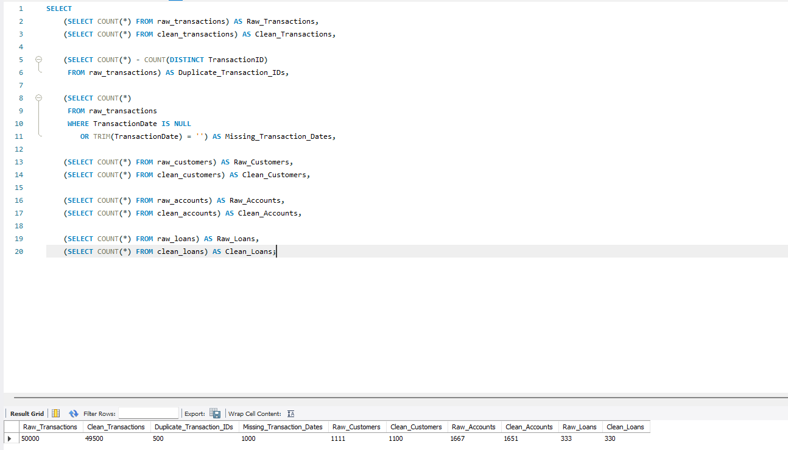
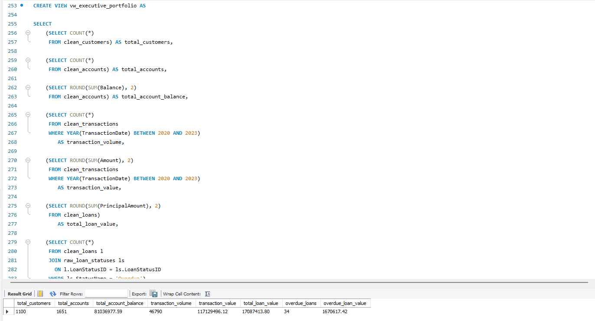
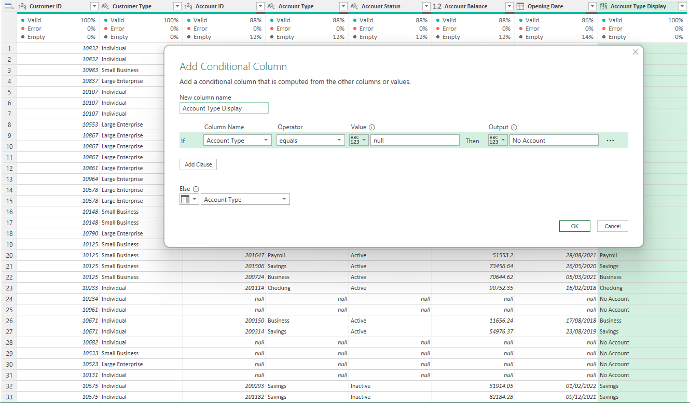
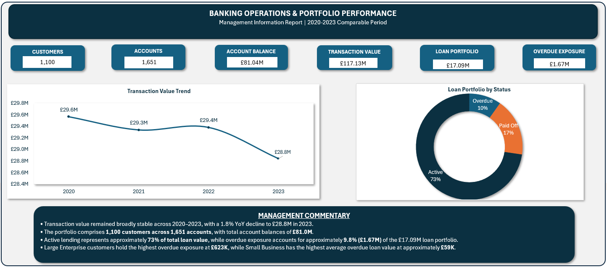
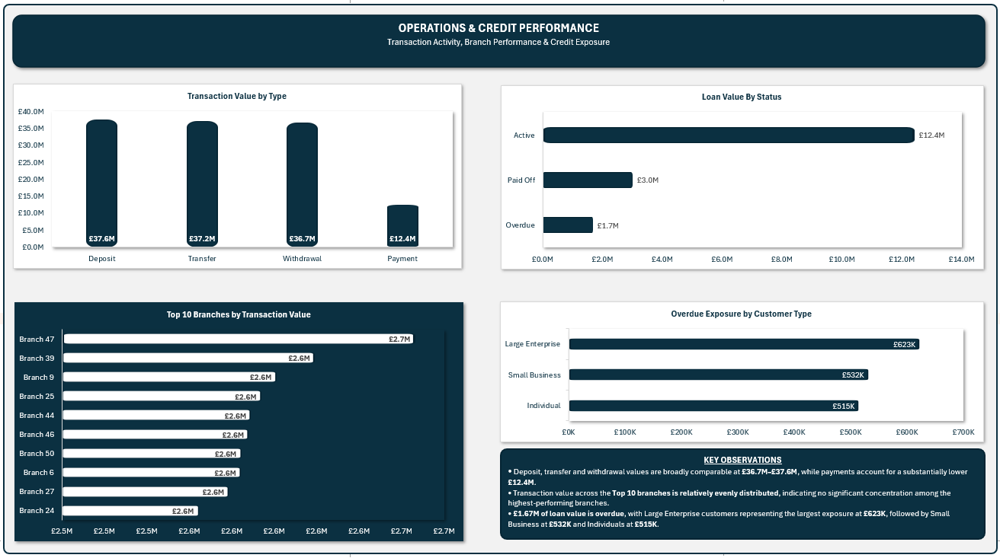
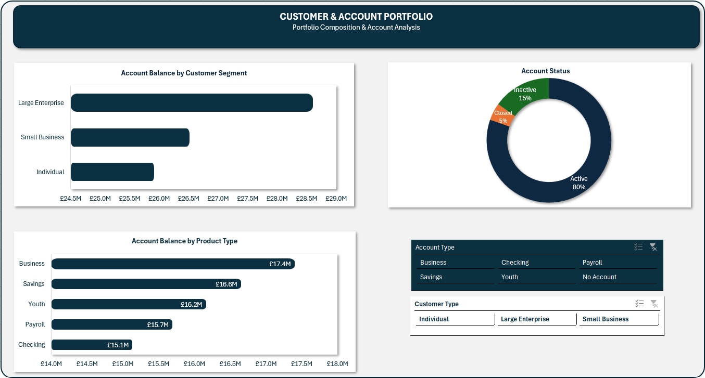

Customers
Clean customer population after removing verified duplicate customer records.
An end-to-end banking analytics project using MySQL, Excel and Power Query to validate source data, create a controlled analytical layer and translate operational, portfolio and credit information into management-ready insight.
Turning complex banking data into clear, reliable insights that support better decisions.
DATA · INSIGHTS · IMPACTThe project was designed around a practical management problem. How to produce a reliable view of banking activity when source data contains duplicates, missing dates, multiple entity types and different reporting grains.
Clean customer population after removing verified duplicate customer records.
Clean account base used for portfolio and balance analysis.
Total balance calculated at account grain to avoid duplication through transaction joins.
Comparable transaction value across the selected 2020–2023 reporting period.
Total principal value across the clean loan population.
Overdue loan principal representing approximately 9.8% of total loan value.
The source data represented multiple parts of a banking operating environment, including customers, accounts, transactions, loans, branches and supporting reference tables.
The analytical challenge was not simply to calculate totals. Management needed a controlled view that could answer operational and portfolio questions without overstating balances, mixing incomplete periods or confusing overdue exposure with default.
The source consisted of transactional and reference tables rather than one flat analytical file. This meant that entity relationships and reporting grain had to be understood before calculating management measures.
Customers, accounts, loans and transactions formed the primary analytical population.
Customer type, account type, account status, loan status, transaction type and branch tables were used to interpret coded identifiers.
Customer, account, loan and transaction tables exist at different levels of detail, creating a risk of double counting if joins are not controlled.
2020–2023 was selected as the comparable period because later years were materially incomplete and would distort trend interpretation.
Data-quality checks were performed before management measures were produced. The objective was to quantify defects, reconcile the clean population and reduce the risk of invalid management totals.
500 duplicate transaction IDs and 1,000 records with missing or unusable transaction dates.
11 verified duplicate customer records removed.
16 duplicate account records removed and balances standardised as numeric.
3 duplicate loan records removed and principal amounts prepared for analysis.
Customer, account, loan and transaction relationships were tested for orphan records. No orphan relationships were identified in the tested keys.
Account balances were calculated directly from the account table rather than after joining to transaction-level records.
This prevented one-to-many transaction joins from multiplying balances and overstating the portfolio.
2020–2023 was retained for trend reporting because 2024 onward contained materially fewer observations and was unsuitable for like-for-like comparison.
The SQL reconciliation output provided an auditable bridge between raw and clean populations, showing exactly how many records were removed and why.
Management KPIs are only useful if the underlying population is controlled. Performing these checks before aggregation reduced the risk of hidden data-quality errors inside reported totals.

MySQL was used as the control layer between source data and Excel reporting. Clean analytical tables and reusable reporting views were created so the same management logic could be consumed consistently rather than rebuilt manually in spreadsheets.
Load source tables while preserving the raw layer.
Assess duplicates, nulls, coverage and row counts.
Check entity relationships and reporting grain.
Create validated analytical tables.
Calculate measures at the correct grain.
Create reusable reporting views for Excel.
Consolidated customers, accounts, account balance, comparable transaction activity, total loan value and overdue exposure into one management output.
Combined customer type with account product, account status, balance and opening date while preserving customers without an associated account.
Reusable outputs were created for transaction trend, transaction type, branch activity, loan status and overdue exposure by customer segment.

This reduced manual calculation risk and created a reusable source for downstream management reporting.
The SQL layer separated source records, cleaning logic, aggregation and presentation, making the reporting process more traceable and reusable.
Portfolio analysis focused on the distribution of account balances across customer segments and account products, supported by account-status analysis.
Large Enterprise customers held approximately £28.61M in account balances, ahead of Small Business at £26.52M and Individual customers at £25.91M.
The balance distribution is relatively broad, but the Large Enterprise segment represents the largest single concentration of account value.
Business, Savings, Youth, Payroll and Checking accounts each contribute materially to the balance base, with no single product dominating the portfolio.
This reduces dependence on one account product, although segment-level performance should still be monitored alongside product mix.
The customer portfolio view used a left join so that customers without linked accounts remained visible rather than being silently excluded.
In Power Query, missing account categories were labelled as No Account to make this population interpretable in the final report.
Transaction analysis was restricted to the comparable 2020–2023 period to avoid interpreting incomplete later years as genuine operational decline.
Comparable transaction value.
Broadly stable versus the prior year.
Transaction value remained stable.
1.8% decline versus 2022.
Annual transaction value remained within a relatively narrow range of approximately £28.8M–£29.6M from 2020 to 2023.
The 2023 decline of 1.8% is modest and should be monitored, but the data does not support a claim of structural deterioration.
Deposit value was £37.65M, Transfer £37.18M and Withdrawal £36.74M across the comparable period.
Payments were materially lower at £12.38M, indicating a different contribution profile within the transaction mix.
Credit analysis focused on portfolio status and overdue principal exposure. Overdue was treated as a reporting status and was not interpreted as default.
239 active loans representing approximately 73% of total loan value.
57 paid-off loans representing approximately 17% of portfolio value.
34 overdue loans representing approximately 9.8% of total loan value.
Large Enterprise customers represented approximately £623K of overdue principal, compared with £532K for Small Business and £515K for Individuals.
Although Large Enterprise has the highest total overdue exposure, Small Business has the highest average overdue loan value at approximately £59K.
This distinction matters because total exposure and average case severity answer different risk questions.
Branch analysis compared transaction value across the highest-performing branches to assess whether the activity profile was heavily concentrated.
The top 10 branches each generated approximately £2.6M–£2.7M in transaction value.
The narrow spread indicates that no single branch dominates transaction activity among the leading performers.
Power Query was used as the preparation layer between SQL and the final Excel report, including business-facing labels required for interpretation.

Customers without account records were retained in the analytical population through a left join. Instead of leaving the resulting account type as a null value, Power Query converted it to the management-readable category No Account.
Replacing null with a meaningful reporting label prevents users from interpreting missing values as data errors and makes the retained customer population explicit in the final report.
The final Excel report was structured into one executive page and two supporting analytical views so management could move from headline portfolio performance into customer, operational and credit detail.
The executive page consolidates the core portfolio position across customers, accounts, transaction value, loan exposure and overdue value, supported by annual transaction trend and loan-status mix.


Provides deeper analysis of account balances by customer segment and product type, supported by account status and interactive filtering.

Combines transaction mix, branch activity, loan status and overdue exposure into one operational and credit-monitoring view.
The analysis identifies areas that warrant continued monitoring rather than unsupported causal conclusions.
Transaction value fell by 1.8% in 2023. This is not large enough to establish deterioration, but future complete periods should be monitored to determine whether the decline persists.
Large Enterprise has the highest total overdue exposure, while Small Business has the highest average overdue loan value. Both measures should be retained in credit monitoring.
Customers without linked accounts should remain visible rather than being removed through inner joins, as this may identify dormant, incomplete or conversion opportunities for further investigation.
Account, transaction and loan measures should continue to be calculated at their correct source grain before cross-table analysis to prevent inflated management totals.
Raw and clean populations were reconciled before management measures were produced.
Core management calculations were centralised in SQL views rather than rebuilt separately in Excel.
Account balance, transaction and loan measures were calculated at the appropriate analytical grain.
Overdue exposure was analysed by both total value and average loan severity.
2020–2023 was isolated as the valid like-for-like period rather than mixing incomplete later years.
The final Excel report translated technical analysis into executive, portfolio and operational views.
The project uses a synthetic banking dataset and the findings therefore demonstrate analytical methodology rather than real-bank performance.
Overdue loan status is reported as overdue exposure and is not treated as default.
The analysis identifies patterns and concentrations but does not establish causality.
2024 onward was excluded from comparable trend analysis because the available observations were materially incomplete.
The strongest outcome from this project was not simply the final Excel report. It was the creation of a controlled analytical process in which source quality, reporting grain, reusable SQL logic and presentation were deliberately separated. That made the final management information easier to trust, interpret and reuse.